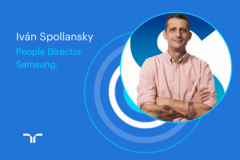

13 junio 20245 acciones para crear un entorno de trabajo inclusivo para el talento LGBTQI+Inclusión laboralgestión de personas
04 junio 2024[entrevistas] Ivan Spollansky, Director de Personas de Samsung: desafíos y oportunidades de la IAgestión de personascontratación
22 mayo 2024Cómo una consultora de Recursos Humanos puede ayudar a tu empresagestión de personasmercado laboral
16 mayo 2024Liquidaciones de sueldo: ¿Cómo calcular el sueldo líquido y bruto?gestión de personasConsejos
14 mayo 20249 perfiles laborales impulsados por el boom de la minería del litio en Chilegestión de personascontratación
09 mayo 2024¿Cuál es tu pretensión de renta?: 3 respuestas efectivas para entrevistascontrataciónConsejos
07 mayo 2024El futuro del trabajo en Chile: desafíos y oportunidades para atraer y fidelizarcontratación
24 abril 2024Desarrollo tecnológico y formación en el trabajo: prioridades del 84% de los trabajadores en Chilegestión de personascontratación